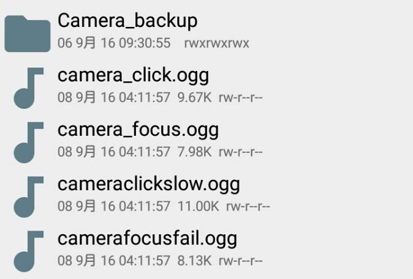

無音カメラとその違法性について
Tweetこんにちは、3年のYtです。実は今回の編集なのですがそれは置いといて、今回はスマホの”無音カメラ”について話したいと思います。皆さんスマホで食べ物やスクリーンショットなどを撮るときにうるさいな…と感じたことはありませんか？そしてそれを無音にしたいと思ったことはありませんか？
私はあります。電車内でLINEのトークをスクショして保存したい！ってときでも音が鳴るので周りに白い目で見られますよね。まずはそのときの対処法についてです。今回はアンドロイドを中心に話していきたいと思います。
無音カメラアプリを入れる
これが一番気楽かと思います。例えばGoogle Playにある「忍びカメラ」です。ですがこれには、ピントを合わせられない、フラッシュが使えないなどの制限があります。ですが、手軽にインストールできるので皆様試してみてはいかがでしょうか？
カメラの音のデータを消す
これは難易度が高いです。Androidでroot(パソコンでいう管理者権限)を改造して使えるようにし、カメラの音のデータを消します。こちらはメーカー保証をなくす行為なので良い子は真似しないでね。
海外のスマホを買おう
これは海外のスマホを買い、そのまま使ってしまおうというものです。simカードという携帯に入っているものをさしかえて設定します。スマホはアマゾンでも売っていますし、海外のスマホはシャッター音のONOFFができるので大丈夫です。
※この内容は総務省の技術基準適合証明を通っていない端末を購入する方法となりますが、決して電波法違反を助長するものではありません。購入は自己責任でお願いします。 では実践していきたいと思います。
1番は使えばわかるので割愛します。 2番ですが、下の画像のところを削除したら、カメラ音が消えました。静かなので堂々といけますね。

3つ目ですが、さすがに新たにスマホを買うお金はないので、今回はXperia ZL2(SOL25)をZ2a(D6563)に中身をかえてみました。すると…音が消えました。ですが、日本の通信を使うとカメラの音が出てしまいます。ここらへんまで厳しいんですね…現状だと無音アプリが安全です。
では、次に何故海外ではシャッター音は鳴らさないでいいのに日本では音が出るようにしなければならないのか、ですが、これはわかりますよね。勿論公共の場での盗撮を防ぐためのものです。音が鳴らないとわからないですからね。それがルールになってきていますし、そのため、携帯メーカーは自主規制によりシャッター音を強制にしているというわけです。
ここからが本題です。
無音カメラについてどの辺りまで合法なのか、疑問点は2つあります。
- 無音アプリの配信は違法なのか
- 使用について違法なところはあるのか
まず一つ目ですが、あくまで配信はただの配信なので縛る法律はありません。そのため、黙認状態となっています。使用者側が気を付けろ、ということらしいです。
２つ目は、こちらは状況によって違いますが、風景などを撮るのは構わないそうですが、公共の場で盗撮らしき行為またはそのものをすると、迷惑防止条例に当たるそうです。
結論
無音カメラは簡単なアプリを利用して利用できるが、公共の場で使用するのは気を付けた方がいい。
皆さんも無音カメラを電車の中などで人を撮ったりせずに使いましょう以上で私の部誌発表を終わります。最後まで読んで頂きありがとうございました。